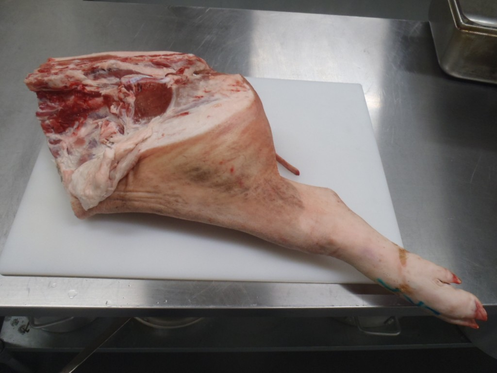
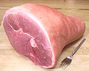
The Ham Primal Cut
| SubPrimal | Common Culinary Uses |
|---|---|
| Shank/Hock | Common cooking methods include stewing and braising. Meat often prepared smoked or corned. |
| Ham (bone-in or boneless) | Fresh ham roast (bone-in, BRT), inside hame RTE, baked, thin sliced smoked hame (wet, cured, half or whole, butt/shank); boiled ham (wet cured, cooked to 145°F); proscuitto ham (salted and dry cured long term); Smithfield ham (dry cured and smoked). |
| Top round | Sautéing is the most common cooking method. Meat is often prepared as cutlets. |
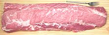
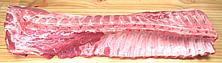
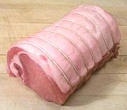
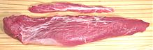
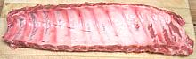
The Loin Primal Cut
| SubPrimal | Common Culinary Uses |
|---|---|
| Center-cut pork loin | Common cooking methods include roasting, grilling, broiling, and sautéing. Meat often prepared as a roast (bone-in, boneless), frenched, smoked, chops (bone-in) or as Canadian style bacon. |
| Boneless loin (eye muscle) | Common cooking methods include grilling, broiling, and sautéing. Meat often perpared as cutlest, medallions or schnitzel. |
| Baby back ribs | Barbequing is the most common cooking method. |
| Tenderloin | Common cooking methods include roasting and sautéing. |
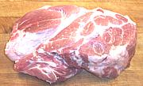
The Boston Butt Primal Cut
| SubPrimal | Common Culinary Uses |
|---|---|
| Boston butt (bone-in, boneless) | Common cooking methods include roasting, stewing, and sautéing. Meat often prepared as forcemeat or sausages. |
| Cottage butt | Common cooking methods include roasting or frying as bacon. Meat often prepared as a roast (fresh) or smoked (English bacon). |
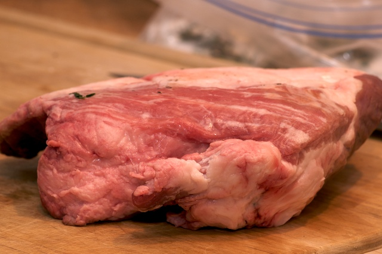
Offal
| SubPrimal | Common Culinary Uses |
|---|---|
| Jowl; Snout; Neckbones; Liver; Heart; Feet; Toes; Tail; Intestines; Kidneys; Caul fat | Braising is the most common cooking method. Meat is often prepared as forcemeat and as sausage. |
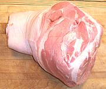
The Picnic Primal Cut (aka Shoulder)
| SubPrimal | Common Culinary Uses |
|---|---|
| Picnic (bone-in or boneless) | Common cooking methods include braising and stewing. Meat often prepared as a roast (boneless, BRT, skin on, fresh), smoked, and cured (picnic ham, smoked shoulder), as tasso ham, or a forcemeat (used for cold-cut preparations). |
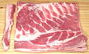
Market Forms: Belly and Fatback
| SubPrimal | Common Culinary Uses |
|---|---|
| Belly (bacon, pancetta, salt pork, fresh) | When fresh, this cut is most often sautéed. Other forms are most often fried. |
| Fatback (fresh, salt) | Meat often pepared as lardons, cassoulet, pâté , and terrines. |

Market Form: Spare Ribs
| SubPrimal | Common Culinary Uses |
|---|---|
| Spare ribs, St. Louis ribs (trimmed) | Common cooking methods include barbecuing and braising. |